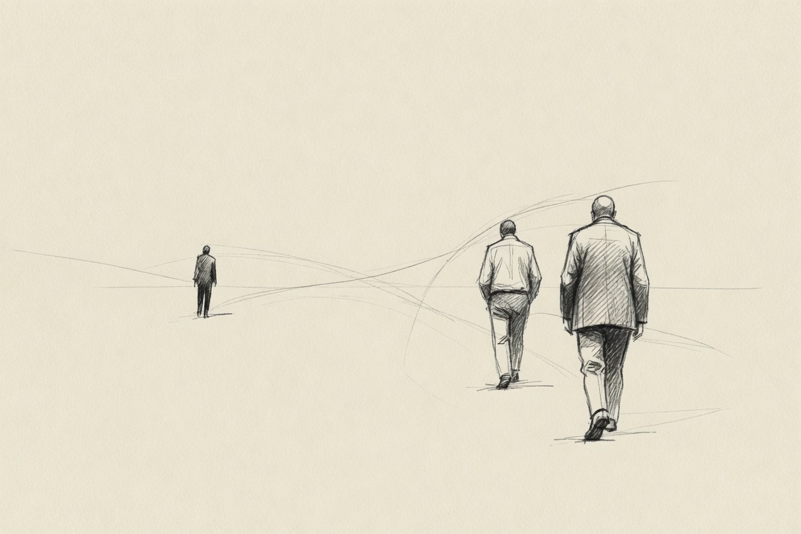

How Musonius works
A Bitcoin security solution. Sovereign by design. Built to outlast you.

Why this exists.
Self-custody matters to you. Not your keys, not your coins.
But self-custody alone is hard. A lost device. A forgotten location. A bad year. The setups that look like multi-key safety on paper are often a single point of failure in practice.
So you have looked at collaborative security. A professional alongside you. A multi-key arrangement designed to survive what solo cannot. It is a real improvement.
But it ends in the same place every time. Trust. Trust that the provider — even the most honest one, running rigorous procedures — will not collude. Trust that their policies hold under court orders, ownership changes, regulatory shifts, employee turnover. Trust that the company you signed up with is the same company in ten years.
Ask any of them two questions: What happens when I want to leave? What happens when you can’t help me? If the answer to either requires the provider’s active participation — they must co-sign your exit, or their infrastructure must be running for recovery to work — you do not have self-custody. You have custody at the company’s pleasure.
That is the gap Musonius is built to close.
How Musonius answers it.
Musonius is built around one rule: while you are able to act, every transaction in your vault requires your signature. No override. No “we’ll sign on your authorization.” Your hardware device, your physical presence, every time.
The rule holds because the math is built to enforce it. Musonius the platform holds no keys — it cannot sign for anything in your vault, ever. There is no platform key to compromise, no override to subvert, no employee discipline that needs to hold. This is not policy — it is the structural absence of the thing that would make policy necessary.
What becomes possible over time
Inactivity adds recovery paths. It never removes the paths you already have.
Musonius is not a key in any path. The same rules remain usable through the Sovereignty Backup Kit.
The vault’s rules are cumulative. During normal use, your signature and one of your keyholders are required. After a significant period of inactivity, you can use your owner key alone to migrate into a new vault if both keyholders are gone. Only after the longer period can your cosigner and inheritance keyholder recover without you. Until those waits mature, neither failsafe path can sign.
Any owner-authorized transaction resets the inactivity periods for every coin in the vault. A check-in does this by moving the full balance back into the vault. Paying even a nominal invoice or sending to another wallet does it too: the transaction rebuilds the remaining balance as fresh outputs, with fresh locks.
Each key lives on its holder’s own hardware signing device. The Sovereignty Backup Kit, generated at vault setup, lets you use these paths through software we did not write. If Musonius is gone tomorrow, your vault still works. If you want to leave while your inheritance keyholder is available, you can leave immediately with those two keys. If both keyholders are gone, Owner Exit becomes available only after its inactivity wait. None of these mechanisms depend on us.
This page describes the three-key vault, which is what most people choose. There is also a simpler two-key version: you and one inheritance keyholder, with no cosigner. It is quicker to set up and it keeps the same failsafe recovery, but it makes a real trade. In the three-key vault, no single key can move your bitcoin. In the two-key vault, your own key spends on its own, so that one key carries the whole weight of everyday security. Choose it for simplicity, not for strength.
The honest part.
There are no perfect custody designs. Every architecture is a trade-off between sovereignty, convenience, recoverability, and resilience against attack. The honest engineers acknowledge this; the providers selling certainty do not.
Musonius cannot save you from every possible compound failure. If every one of your keys is lost at the same time, nothing survives. If both of your non-owner keyholders coordinate against you for the full failsafe period — without you noticing, without you able to act — they can recover the funds. The friction is long, the structural independence makes it hard, but the math does not strictly prevent it. We will not tell you it does.
The two-key vault carries one more. After the failsafe period, your inheritance keyholder can recover on their own, because there is no second person who has to agree. That is the same mechanism that protects your family if you are gone. In a two-key vault it rests on one person instead of two.
What Musonius gives you is a vault where the math handles what math can handle, where the friction in the failure modes is built around independence and time, and where no party — including us — has the structural ability to collude with anyone.
We don't pretend otherwise. We just designed the trade-offs honestly.
Trust in math. Not in people.